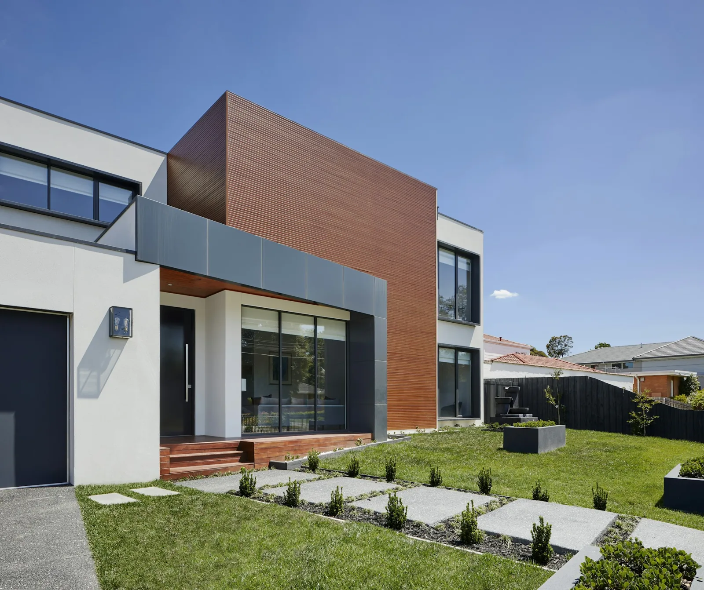
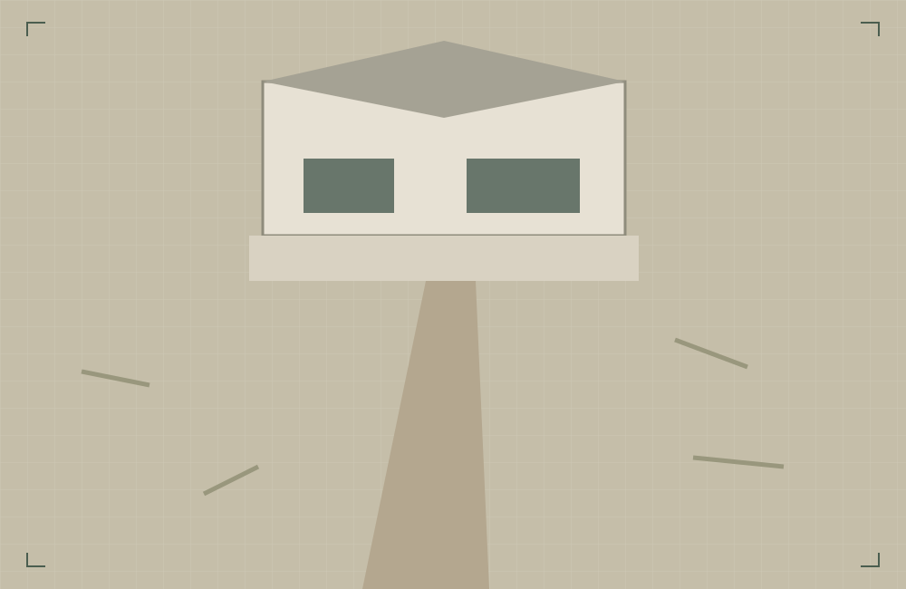
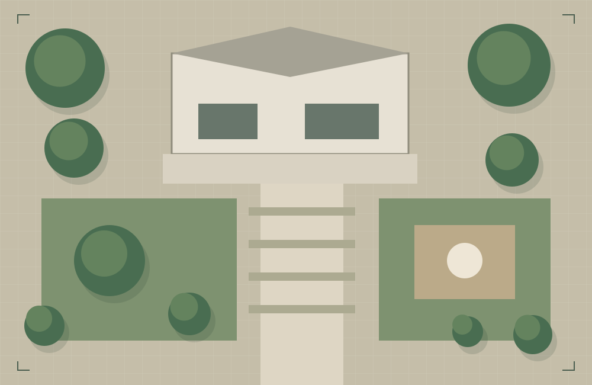

FORMA — простір, створений
природою
та дизайном.
Ландшафтний дизайн та благоустрій приватних територій на правому березі Києва.
ПРИРОДА БЛИЖЧЕ, НІЖ ЗДАЄТЬСЯ
Про нас
Архітектура простору.
Відчуття природи.
Послуги
Від першої ідеї —
до цілісного простору.
Наші проєкти
У кожного саду —
своя форма.
Наразі в галереї — фото для натхнення. Це не реалізовані роботи FORMA.
До / Після
Нова перспектива
вашої ділянки.
Перемістіть повзунок, щоб порівняти два стани простору. Іноді достатньо іншого погляду, щоб побачити його потенціал.
Обговорити можливості

Перетягніть межу або скористайтеся стрілками клавіатури
Як ми працюємо
Продуманий шлях.
Природний результат.
Територія роботи
Один берег.
Більше уваги.
Виключно правий берег міста Києва
Не впевнені щодо розташування?
Зазначте район у зверненні — уточнимо можливість співпраці.
Індивідуальний розрахунок
Ваш задум.
Ваш масштаб.
Площа, стан ділянки та склад робіт впливають на бюджет. Розкажіть трохи про простір — підготуємо основу для предметної розмови.
Контакти
Дайте вашій ідеї
пустити коріння.
Почнімо з простого — знайомства
та розмови про ваш майбутній сад.
Контакти очікують на підтвердження власником FORMA.
Збираємо образи майбутнього саду.
Знайдіть те, що відгукується вам.